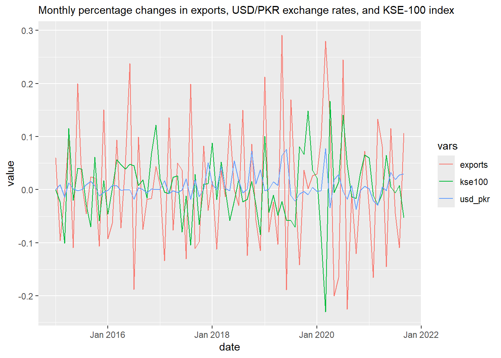
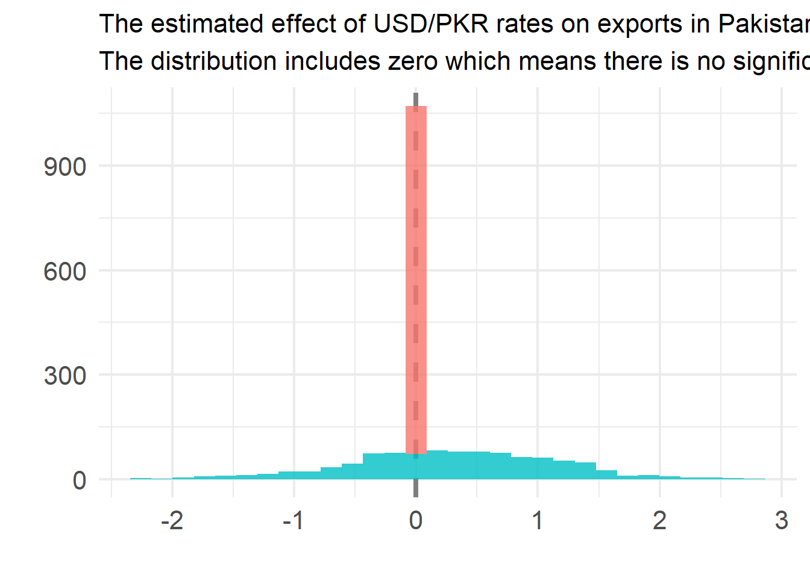

Understanding the Impact of Exchange Rates on Pakistan’s Exports
In this blog, we explore the intricate relationship between exchange rates and export performance in Pakistan, using economic theory, data visualization, and statistical analysis in R.
Introduction
Briefly introduce the topic, its economic significance, and the peculiar case of Pakistan where traditional economic expectations do not always align with observed data trends.
Economic Theory Behind Exchange Rates and Exports
Provide a detailed explanation of how exchange rates are expected to influence exports:
Competitiveness
Discuss how depreciation makes goods cheaper internationally, potentially boosting exports, and vice versa.
Pricing and Profits
Explain how exchange rate fluctuations can affect exporter profits by altering the value of foreign earnings when converted to local currency.
Cost of Inputs
Mention how a weaker currency can increase the cost of imported inputs, potentially negating some benefits of a depreciated currency.
Factors Complicating the Exchange Rate-Export Relationship
Highlight the complexities in the relationship which might explain the anomalies in the Pakistan scenario:
Elasticity of Demand
Global Economic Conditions
Structural and Policy Issues
Long-term Contracts and Pricing in USD
Data Preparation and Analysis with R
Embed the R code used for data loading, cleaning, and preparation:
library(tidyverse)
Warning: package 'lubridate' was built under R version 4.4.2
── Attaching core tidyverse packages ──────────────────────── tidyverse 2.0.0 ──
✔ dplyr 1.1.4 ✔ readr 2.1.5
✔ forcats 1.0.0 ✔ stringr 1.5.1
✔ ggplot2 3.5.1 ✔ tibble 3.2.1
✔ lubridate 1.9.4 ✔ tidyr 1.3.1
✔ purrr 1.0.2
── Conflicts ────────────────────────────────────────── tidyverse_conflicts() ──
✖ dplyr::filter() masks stats::filter()
✖ dplyr::lag() masks stats::lag()
ℹ Use the conflicted package (<http://conflicted.r-lib.org/>) to force all conflicts to become errors
Loading required package: PerformanceAnalytics
Loading required package: xts
Loading required package: zoo
Attaching package: 'zoo'
The following objects are masked from 'package:base':
as.Date, as.Date.numeric
######################### Warning from 'xts' package ##########################
# #
# The dplyr lag() function breaks how base R's lag() function is supposed to #
# work, which breaks lag(my_xts). Calls to lag(my_xts) that you type or #
# source() into this session won't work correctly. #
# #
# Use stats::lag() to make sure you're not using dplyr::lag(), or you can add #
# conflictRules('dplyr', exclude = 'lag') to your .Rprofile to stop #
# dplyr from breaking base R's lag() function. #
# #
# Code in packages is not affected. It's protected by R's namespace mechanism #
# Set `options(xts.warn_dplyr_breaks_lag = FALSE)` to suppress this warning. #
# #
###############################################################################
Attaching package: 'xts'
The following objects are masked from 'package:dplyr':
first, last
Attaching package: 'PerformanceAnalytics'
The following object is masked from 'package:graphics':
legend
Loading required package: quantmod
Loading required package: TTR
Attaching package: 'TTR'
The following object is masked from 'package:dials':
momentum
Registered S3 method overwritten by 'quantmod':
method from
as.zoo.data.frame zoo
library(timetk)library(modeltime)
Attaching package: 'modeltime'
The following object is masked from 'package:TTR':
growth
library(lubridate)library(zoo)library(boot)# Code to load and clean datadf_exports_raw <-read_csv('data/total_export_receipts_krndaz.csv', skip =1)
Rows: 174 Columns: 2
── Column specification ────────────────────────────────────────────────────────
Delimiter: ","
chr (1): Monthly
dbl (1): US$ (Millions)
ℹ Use `spec()` to retrieve the full column specification for this data.
ℹ Specify the column types or set `show_col_types = FALSE` to quiet this message.
df_exports <- df_exports_raw %>%rename(date = Monthly, exports =`US$ (Millions)`) %>%mutate(date =as.yearmon(date, format ="%b %Y")) %>%mutate(exports =str_remove_all(exports, "[^0-9\\.]+")) %>%mutate(exports =as.numeric(exports)) %>%drop_na() %>%mutate(exports = exports /lag(exports) -1) %>%drop_na()# Continue with the loading and cleaning of exchange rate and KSE-100 index data
Warning in to.period(x, "months", indexAt = indexAt, name = name, ...): missing
values removed from data
# Print to verify the dataprint("USD/PKR Data:")
[1] "USD/PKR Data:"
print(head(df_usdpkr))
# A tibble: 6 × 2
date usd_pkr
<yearmon> <dbl>
1 Jan 2015 0
2 Feb 2015 0.00942
3 Mar 2015 -0.0135
4 Apr 2015 0.0127
5 May 2015 0.00157
6 Jun 2015 -0.00157
# Monthly change (%) of KSE-100 index# https://finance.yahoo.com/quote/%5EKSE/df_kse100 <-tq_get("^KSE", to ="2024-07-01") %>%tq_transmute(select ="close",mutate_fun = to.monthly) %>%tq_transmute(mutate_fun = periodReturn,period ="monthly",col_rename ="kse100")
Warning in to.period(x, "months", indexAt = indexAt, name = name, ...): missing
values removed from data
# Print to verify the dataprint("KSE-100 Data:")
[1] "KSE-100 Data:"
print(head(df_kse100))
# A tibble: 6 × 2
date kse100
<yearmon> <dbl>
1 Jan 2015 0
2 Feb 2015 -0.0236
3 Mar 2015 -0.101
4 Apr 2015 0.116
5 May 2015 -0.0200
6 Jun 2015 0.0406
# Merging seriesdf_merged <- df_exports %>%left_join(df_usdpkr, by ="date") %>%left_join(df_kse100, by ="date") %>%drop_na()# Print to verify the merged dataprint("Merged Data:")
[1] "Merged Data:"
print(head(df_merged))
# A tibble: 6 × 4
date exports usd_pkr kse100
<yearmon> <dbl> <dbl> <dbl>
1 Sep 2021 0.106 0.0297 -0.0531
2 Aug 2021 -0.110 0.0277 0.00775
3 Jul 2021 -0.0449 0.0195 -0.00635
4 Jun 2021 0.115 0.0327 0.00487
5 May 2021 -0.145 -0.00201 0.0647
6 Apr 2021 0.0817 0.00551 -0.00730
Visualizing Data
Incorporate the ggplot2 visualizations that depict the relationship over time:
# Plotting code to visualize monthly percentage changesdf_merged %>%pivot_longer(-date, names_to ="vars") %>%ggplot(aes(date, value, color = vars)) +geom_line() +labs(subtitle ="Monthly percentage changes in exports, USD/PKR exchange rates, and KSE-100 index")
Warning: The `trans` argument of `continuous_scale()` is deprecated as of ggplot2 3.5.0.
ℹ Please use the `transform` argument instead.

Statistical Analysis
Embed the code for regression and bootstrap analysis to statistically examine the effects of exchange rates on exports:
# Filter data for the last 10 yearsstart_date <-as.yearmon(Sys.Date()) -10df_merged_filtered <- df_merged %>%filter(date >= start_date)# Print to verify the filtered dataprint("Filtered Merged Data:")
[1] "Filtered Merged Data:"
print(head(df_merged_filtered))
# A tibble: 6 × 4
date exports usd_pkr kse100
<yearmon> <dbl> <dbl> <dbl>
1 Sep 2021 0.106 0.0297 -0.0531
2 Aug 2021 -0.110 0.0277 0.00775
3 Jul 2021 -0.0449 0.0195 -0.00635
4 Jun 2021 0.115 0.0327 0.00487
5 May 2021 -0.145 -0.00201 0.0647
6 Apr 2021 0.0817 0.00551 -0.00730
# Determine the last date in the datasetend_date <-max(df_merged_filtered$date)
# Bootstrap confidence intervals using the `boot` packageset.seed(12345)# Define the regression functionregression_function <-function(data, indices) { d <- data[indices, ] # allows boot to select sample fit <-glm(exports ~ usd_pkr, data = d)return(coef(fit))}# Bootstrappingboot_results <-boot(data = df_merged_filtered, statistic = regression_function, R =1000)# Extract bootstrap estimatesboot_estimates <- boot_results$t# Create a data frame for plottingboot_df <-as.data.frame(boot_estimates)colnames(boot_df) <-names(coef(glm(exports ~ usd_pkr, data = df_merged_filtered)))# Plotting the bootstrap confidence intervalsboot_df %>%pivot_longer(cols =everything(), names_to ="term", values_to ="estimate") %>%ggplot(aes(estimate, fill = term)) +geom_vline(xintercept =0, size =1.5, lty =2, color ="gray50") +geom_histogram(alpha =0.8, show.legend =FALSE) +labs(x ="", y ="",subtitle ="The distribution includes zero which means there is no significant effect",title ="The estimated effect of USD/PKR rates on exports in Pakistan") +theme_minimal(base_size =16) +theme(axis.text =element_text(size =16),plot.title =element_text(size =16))
Warning: Using `size` aesthetic for lines was deprecated in ggplot2 3.4.0.
ℹ Please use `linewidth` instead.
`stat_bin()` using `bins = 30`. Pick better value with `binwidth`.

Discussion of Findings
Discuss the results from the visual and statistical analysis, highlighting any insights or contradictions observed in the context of economic theories and the peculiar economic environment of Pakistan.
Conclusion
Conclude with a summary of findings, their implications for economic policy and business practice in Pakistan, and suggestions for future research.
Further Analysis (Optional)
Optionally, suggest further lines of inquiry or different methodological approaches that might provide additional insights, such as sector-specific analyses or the impact of macroeconomic indicators other than exchange rates.